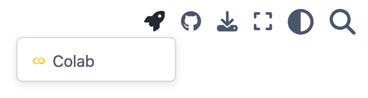
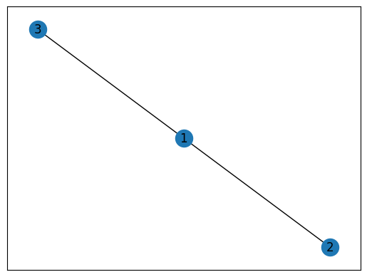

import networkx as nx
import matplotlib.pyplot as pltUse Jupyter Notebooks
Use Jupyter Notebooks
We will use a Python package named NetworkX to run some basic network analysis in this course. There are many other powerful network analysis packages out there, such as igraph. NetworkX is very intuitive to work with and you can switch to other packages if you like.
If you think you can benefit from an introduction to Python, I recommend Python for Everyone (PY4E). This course is not focused on teaching Python, but will provide some basic scaffolds for network analysis in Python.
The course will provide you sample code to work with. Code will be shared as Jupyter notebooks that can be run either on your compupter (if a proper Python environment has been installed) or on Google Colab (which is usually easier for beginners).
This page you’re reading is written as a Jupyter notebook. You can load this page on Google Colab by clicking on the rocket icon in the upper-right corner of this page. See the screenshot below:

With the notebook opened on Colab, you can run and edit the code yourself.
Import NetworkX
As mentioned above, we will be primarily working with NetworkX for network analysis.
In Python, the first thing to do is to import the package to the runtime environment. We are giving the package a nickname nx so it’s easier to refer to it.
Now the package has been successfully imported.
Note that we use these two words network and graph interchangeably but they could mean quite different things in different contexts.
Create a toy network manually
Let’s create an empty network using nx.Graph and then manually add 3 nodes and 2 edges to the network.
Below is a few lines of code to achieve this goal.
g = nx.Graph()
g.add_node(1) # Add a single node
g.add_nodes_from([2,3]) # Add a list of nodes
g.add_edge(1,2)
g.add_edge(3,1)Visualize a network
You can simply call the draw() function to draw the network.
nx.draw(g)The draw() function draws the graph as a simple representation with no node labels or edge labels.
To have more options such as adding node labeling and graph titles, you can use draw_networkx().
nx.draw_networkx(g)
Create a classic network
Instead of manually creating a network, you can also create classic graphs using NetworkX.
Below, we load the classic Karate Club graph by Zachary (1977) and visualize it.
g_kc = nx.karate_club_graph()
nx.draw_networkx(g_kc)Network Analysis
With the graph created, we can start to run some simply network analysis.
For example, what is the degree centrality of node #19 in this graph?
nx.degree(g_kc, 19)3Or even better, let’s print out degree for all nodes.
print("Node Degree")
for v in g_kc:
print(f"{v:4} {g_kc.degree(v):6}")Node Degree
0 16
1 9
2 10
3 6
4 3
5 4
6 4
7 4
8 5
9 2
10 3
11 1
12 2
13 5
14 2
15 2
16 2
17 2
18 2
19 3
20 2
21 2
22 2
23 5
24 3
25 3
26 2
27 4
28 3
29 4
30 4
31 6
32 12
33 17Learn More about NetworkX
This notebook provides a gentle introduction to NetworkX, to demonstrate how easy it is to get started.
In this course, we will work with many other areas of network analysis.
If you are newer to Python programming, one important skill in the process is to learn how to check reference pages and find answers yourself.
For example, NetworkX provides a very well organized reference page that can be helpful: https://networkx.org/documentation/stable/reference/index.html
You are also encouraged to leverage ChatGPT in the process, as long as you spend time to make sense of ChatGPT outputs and be transparent and responsible for what is submitted as your work.